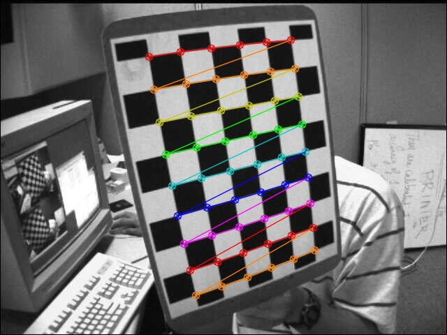
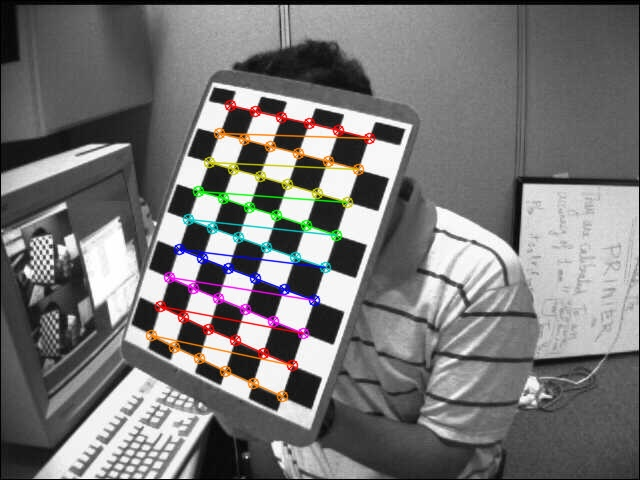

Introdução
A calibração de câmeras é o processo de determinar os parâmetros intrínsecos e extrínsecos de uma câmera,
essencial para corrigir distorções óticas e melhorar a precisão das imagens capturadas.
Esse processo é crucial em diversas aplicações, como visão computacional, realidade aumentada,
fotogrametria, navegação autônoma e reconstrução 3D, pois permite medições precisas de distâncias e ângulos,
além de facilitar a integração de múltiplas câmeras em sistemas complexos. Sem calibração adequada,
as medições podem ser imprecisas, comprometendo a qualidade das análises visuais.
Procedimentos Experimentais
Ambiente:
Para realizar este laboratório é necessário ativar o ambiente virtual CV24, verificar a seção ambiente python.
Parte 1:
A primeira etapa do experimeto consistiu em realizar o estudos dos seguintes artigos:
Parte 2:
A) O procedimento de calibração de câmera com imagens fornecidas de exemplo
Matriz K (matriz intrínseca - cameraMatrix)
$$\begin{pmatrix}
536.07345296 & 0 & 342.37047282 \\
0 & 536.01636332 & 235.53687702\\
0 & 0 & 1
\end{pmatrix}$$
Matriz R (matriz de rotação), a combinção desta com vetor de translação formam a matriz extrínseca
Vetor r (Lista de vetores de rotação, um para cada imagem de calibração - rvecs)
$$\begin{pmatrix}
-0.37463355 & 0.06982818 & -0.01937111 \\
0.05280128 & -0.60171832 & -0.18453815 \\
-0.34698232 & -0.06738512 & -1.20088998 \\
0.19721096 & -0.42009963 & -0.1949708 \\
0.48287277 & -0.17037078 & -1.40740327 \\
-0.10141629 & 0.32034812 & 0.3147293 \\
-0.08398729 & 0.34802798 & -1.54244125 \\
-0.22584613 & 1.0155115 & -2.79470623 \\
-0.4735952 & 0.08970834 & -0.22605981 \\
-0.35339067 & 0.24071863 & 0.20970027 \\
0.49542336 & 0.11948808 & -0.29675958 \\
0.06525918 & 0.44701842 & 0.10800013 \\
-0.27527313 & 0.10123349 & -1.56296568
\end{pmatrix}$$
Vetor t (Lista de vetores de translação, um para cada imagem de calibração - tvecs)
$$\begin{pmatrix}
-2.95848731 & -3.94417974 & 13.21423743 \\
-2.16838794 & -3.50011196 & 10.73694991 \\
-3.427436 & 0.4873819 & 11.56153507 \\
-2.67642941 & -3.18945602 & 10.58262241 \\
-3.50264637 & 1.61595404 & 11.97222152 \\
-3.72585434 & -4.3108485 & 17.20439703 \\
-2.96218417 & 0.57158932 & 16.83013775 \\
2.53399419 & 4.31999128 & 13.71919122 \\
-2.51791826 & -3.43069105 & 12.85702135 \\
-1.59004095 & -4.31771235 & 14.01040668 \\
-3.40557514 & -2.41042315 & 12.58706805 \\
2.20741839 & -3.21446613 & 15.60125394 \\
-3.99388098 & 2.27704343 & 12.68878108
\end{pmatrix}$$
vetor dos coeficientes dedistorção - distCoeffs
$$\begin{pmatrix}
-0.26509044 & -0.04674186 & 0.00183301 & -0.00031469 & 0.25231154
\end{pmatrix}$$
Outputs


B) Calibração da sua webcam com a captura de suas próprias imagens de calibração:
Matriz K (matriz intrínseca - cameraMatrix)
$$\begin{pmatrix}
688.17861421 & 0 & 310.79641742 \\
0 & 688.0280114 & 273.28646352 \\
0 & 0 & 1
\end{pmatrix}$$
Matriz R (matriz de rotação), a combinção desta com vetor de translação formam a matriz extrínseca
Vetor r (Lista de vetores de rotação, um para cada imagem de calibração - rvecs)
$$\begin{pmatrix}
-0.77089928 & -0.20748077 & -1.22759847 \\
0.56744658 & -0.74220321 & 1.36651091 \\
-0.65738922 & 0.08597662 & 0.50847707 \\
-0.74068228 & 0.03819628 & -0.44855776 \\
0.82000804 & 0.00263527 & -1.31278575 \\
0.99547212 & -0.08538582 & 0.03163919 \\
0.13666889 & -0.16332287 & 1.56227647 \\
0.83221738 & -0.55586342 & -0.17582478 \\
-0.16377739 & -0.34920566 & 1.45049557 \\
0.77552546 & 0.51876131 & -0.60507042 \\
1.0325889 & 0.04128395 & -0.95979641 \\
0.81647832 & -0.12566141 & 0.53039031 \\
0.72803148 & 0.73721624 & 1.59139843 \\
-0.49025235 & 0.12197916 & -1.35998497 \\
0.39356816 & -0.61792833 & 0.96652623
\end{pmatrix}$$
Vetor t (Lista de vetores de translação, um para cada imagem de calibração - tvecs)
$$\begin{pmatrix}
-3.24091577 & -0.18332717 & 14.27543043 \\
3.17767046 & -2.46690474 & 11.60531848 \\
-0.14250837 & -5.34734474 & 17.14760952 \\
-5.45540262 & -3.1919326 & 16.14024006 \\
-3.7980239 & 1.81823929 & 11.81609233 \\
-1.59360925 & -1.9892122 & 10.3962898 \\
3.21067738 & -4.12237918 & 14.46250787 \\
-1.10082636 & -1.60534566 & 9.8671767 \\
4.10947325 & -4.49252901 & 16.879081 \\
-4.58292276 & -1.2841059 & 14.37480603 \\
-4.20928801 & 1.06088597 & 11.42149285 \\
-1.72655886 & -3.43963682 & 11.8210042 \\
2.89809731 & -2.98516262 & 12.73543775 \\
-3.89502857 & 0.8494834 & 15.24272933 \\
2.20380722 & -3.92977933 & 13.56558867
\end{pmatrix}$$
vetor dos coeficientes dedistorção - distCoeffs
$$\begin{pmatrix}
0.03731591 & -0.11203904 & 0.00162666 & -0.00267543 & 0.35342821
\end{pmatrix}$$
Outputs
C) Realize a calibração de uma outra câmera pessoal
Matriz K (matriz intrínseca - cameraMatrix)
$$\begin{pmatrix}
3.12278571e+03 & 0.00000000e+00 & 1.25379011e+03 \\
0.00000000e+00 & 3.08943266e+03 & 2.13299622e+03 \\
0.00000000e+00 & 0.00000000e+00 & 1.00000000e+00
\end{pmatrix}$$
Matriz R (matriz de rotação), a combinção desta com vetor de translação formam a matriz extrínseca
Vetor r (Lista de vetores de rotação, um para cada imagem de calibração - rvecs)
$$\begin{pmatrix}
0.927245 & -0.05162618 & -0.03516649 \\
0.84592268 & -1.13613196 & -1.3980668 \\
0.22633802 & -0.84636312 & 0.15551846 \\
0.3874894 & -0.79153158 & 0.0105484 \\
0.14550182 & -0.77217311 & -0.55161362 \\
0.10880897 & 0.63368111 & -0.03089371 \\
0.00898068 & 0.70231043 & 0.04904508 \\
0.27298535 & -0.16466778 & 0.90112475 \\
0.01503177 & 0.20950331 & -0.85137469 \\
1.06096153 & -0.22283515 & -0.02136163 \\
0.02406658 & -0.15574902 & 1.51509023 \\
0.77146589 & -0.27121984 & -0.02394365 \\
0.46516485 & 0.4516716 & -1.49109038
\end{pmatrix}$$
Vetor t (Lista de vetores de translação, um para cada imagem de calibração - tvecs)
$$\begin{pmatrix}
-3.09898096 & -3.25144774 & 16.38197297 \\
-3.62641901 & 1.84443656 & 11.23969844 \\
-0.71814465 & -3.6198872 & 11.05219207 \\
-2.68188939 & -3.06717128 & 14.2734208 \\
-3.33055822 & -3.42862822 & 10.57681036 \\
-2.58929738 & -3.04396115 & 13.74099967 \\
-2.60522864 & -3.62179542 & 15.41154123 \\
0.76492099 & -4.81664528 & 16.97543324 \\
-5.15697253 & -2.8381708 & 16.99921524 \\
-2.48119529 & -1.87037757 & 8.66162215 \\
5.55417643 & -6.83353067 & 13.0595683 \\
-2.65122772 & -2.7667323 & 10.4595628 \\
-4.08795536 & 1.760678 & 16.76747541
\end{pmatrix}$$
vetor dos coeficientes dedistorção - distCoeffs
$$\begin{pmatrix}
0.06757537 & -0.48667342 & 0.01396809 & 0.01105379 & 0.62702187
\end{pmatrix}$$
Outputs
D) Correção de distorção de imagens
Análise e Discussão dos Estudos Realizados
Referências Consultadas
OpenCV. Documentação OpenCV. Disponível em: https://docs.opencv.org/4.x/index.html. Acesso em: 13 jun. 2024.